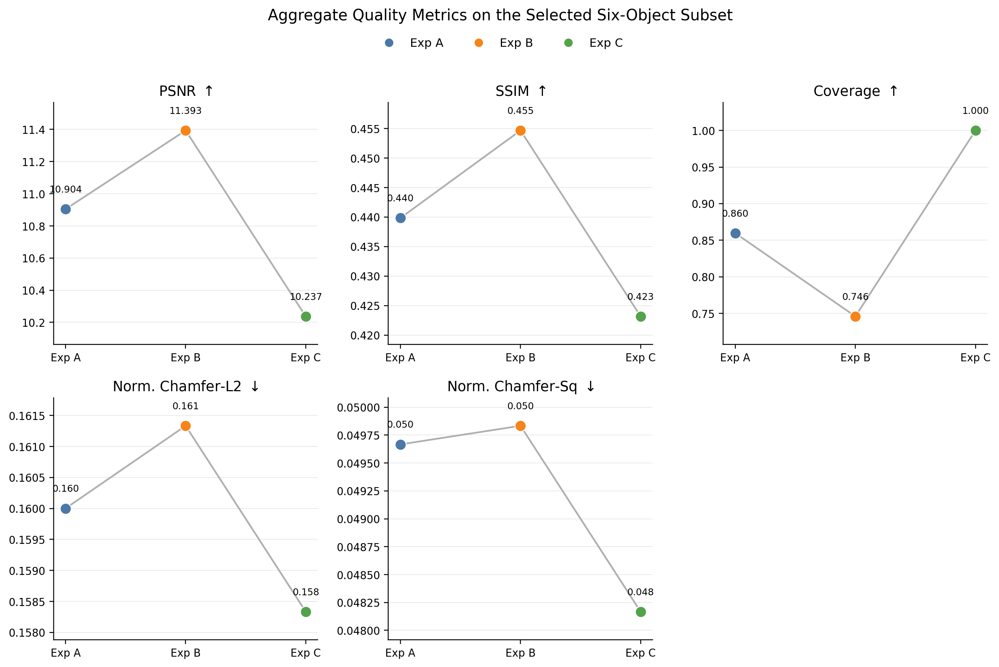
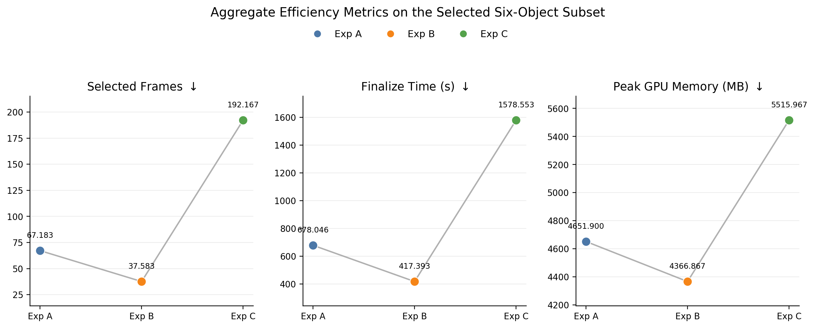
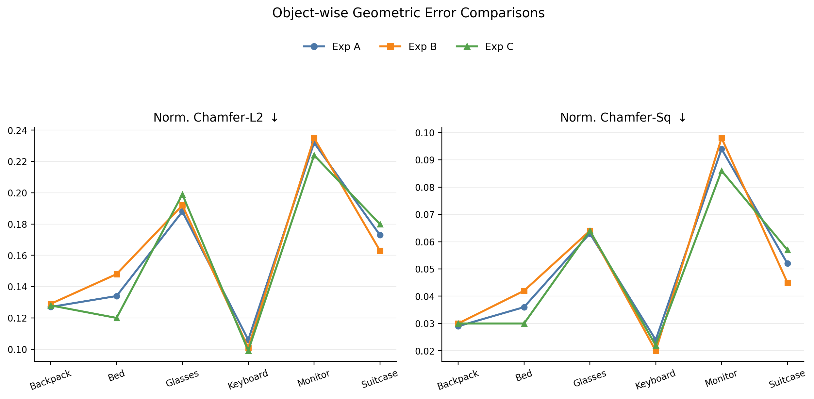
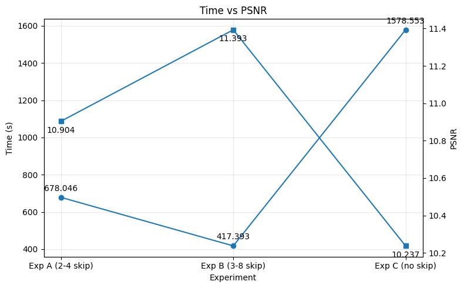
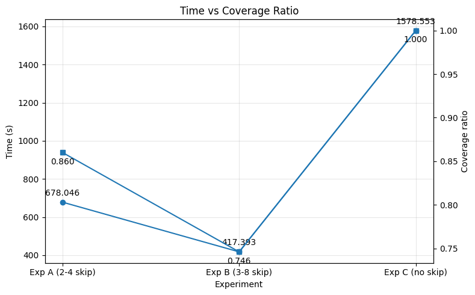
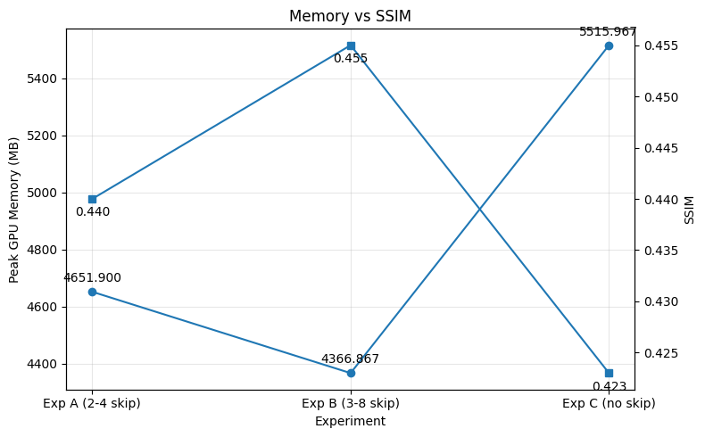
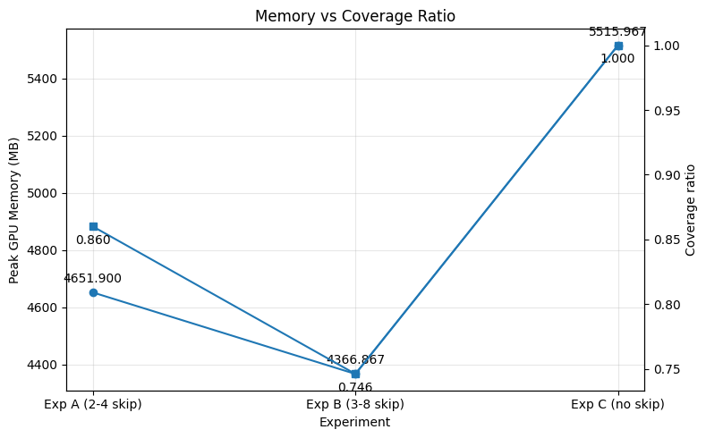
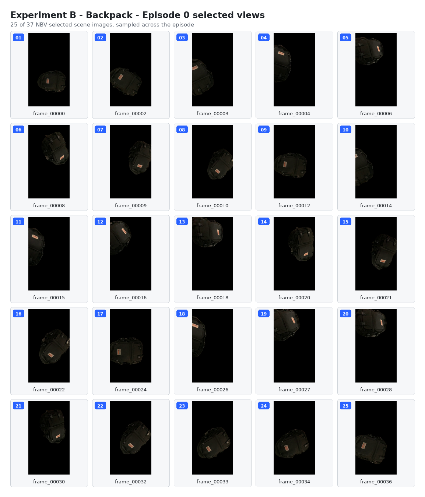
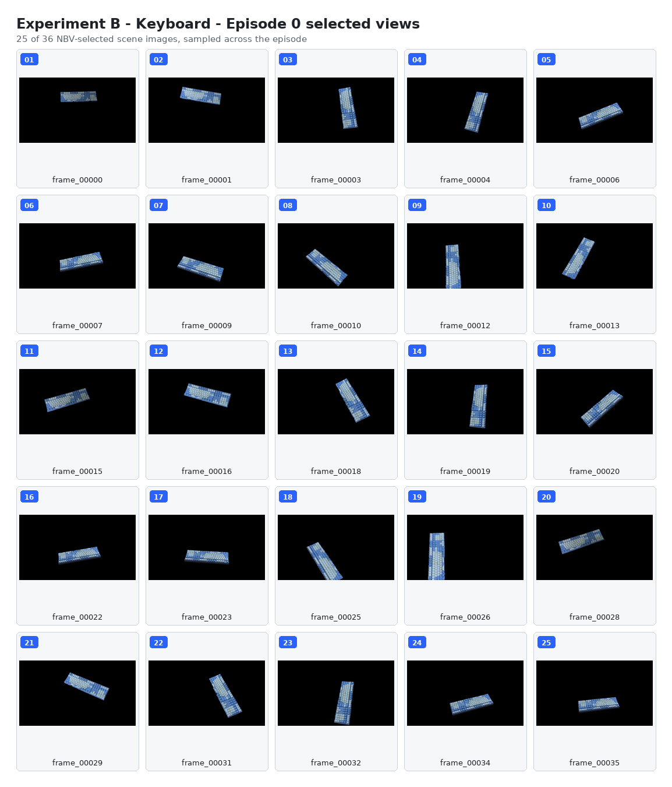

State
Compact coverage, camera motion, and online load features summarize the partial scene.
BS Thesis Project | Active 3D Vision | NBV Planning
A reinforcement learning framework for selecting informative views quickly, reducing redundant observations, and feeding efficient reconstructions through a 2D Gaussian Splatting backend.
Abstract
Recent advances in Neural Radiance Fields and Gaussian Splatting have improved reconstruction quality, but efficient data acquisition remains a major bottleneck. This project integrates Deep Reinforcement Learning with 2D Gaussian Splatting to jointly optimize keyframe selection and Next-Best-View planning.
The agent is formulated as a closed-loop Markov Decision Process that balances geometric information gain, novelty, coverage improvement, travel cost, and computational overhead. The result is a speed-first reconstruction pipeline that keeps useful observations while reducing redundant sensing.
Method
Compact coverage, camera motion, and online load features summarize the partial scene.
A reinforcement learning agent chooses whether a view is worth keeping or where to move next.
Coverage and novelty are rewarded while travel, compute, and zero-gain actions are penalized.
Selected frames are passed to a 2D Gaussian Splatting pipeline for efficient reconstruction.
Visualizations
Results







Selected Views


Resources